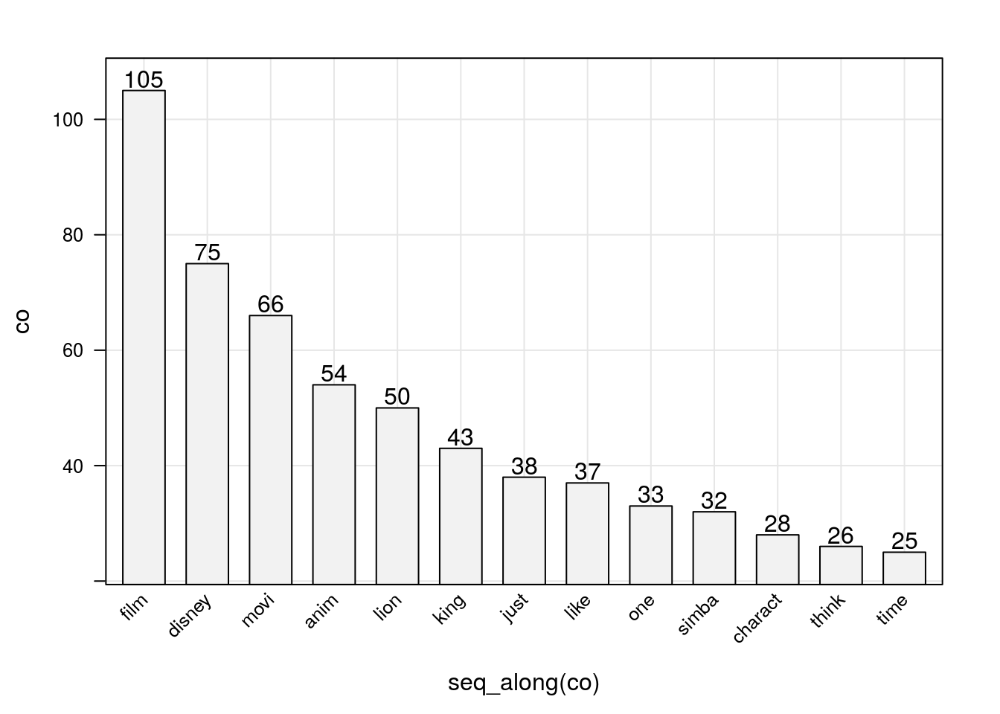
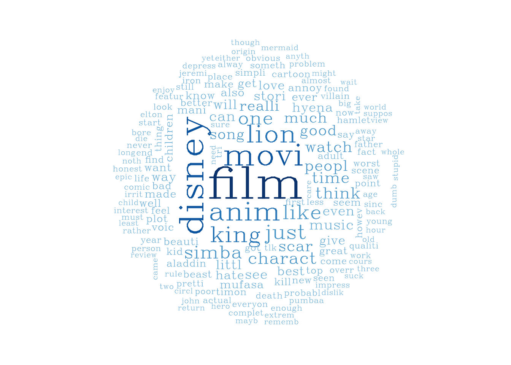
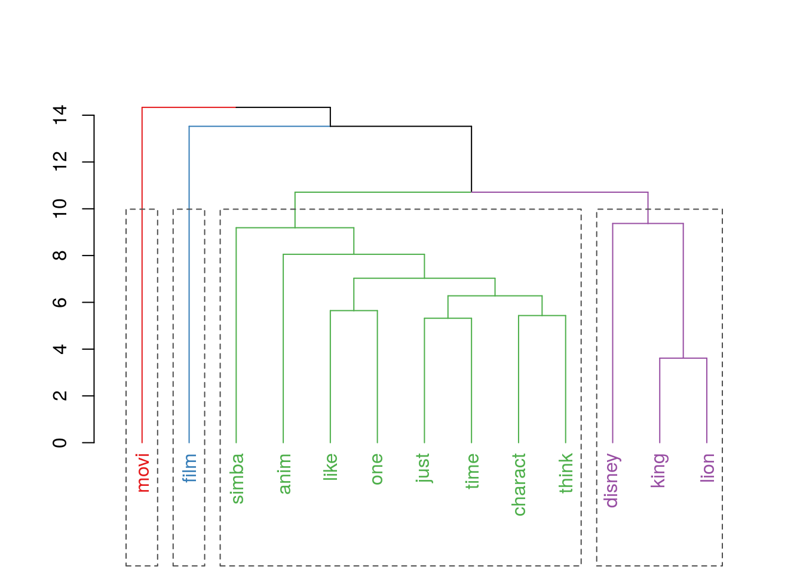

Machine Learning - Text and Image Mining
Eduardo E. R. Junior - DEST/UFPR
18 de junho de 2016
Nesse trabalho o objetivo é ilustrar uma aplicação de análise de texto. A principal, e mais desafiadora, tarefa em análise de texto e imagens é transformar dados não estruturados (e.g. textos, conteúdos de sites, imagens, etc.) em dados numéricos estruturados. A partir dos dados estruturados as análises já são bem estabelecidas na Estatística.
O trabalho está organizado em XX seções onde mostra-se os recursos computacionais providos no software R para manipulação e análise de texto. O texto a ser analisado é uma amostra dos reviews americanos sobre o filme O Rei Leão (em inglês The Lion King).
Manipulando dados
Primeiramente vamos ler os dados, que foram disponibilizados em arquivo de texto pleno, veja o arquivo reviews_TheLionKing.
##-------------------------------------------
## Lendo os dados
daLines <- readLines("./data/reviews_TheLionKing")
daLines <- daLines[nchar(daLines) > 3]Note que os dados foram lidos linha a linha e as linhas com um número de caracteres menor que 3 foram descartadas, pois são aquelas que dividem os reviews.
Com os dados devidamente carregados utilizamos os resursos do pacote tm (Text Mining Package), que trazem diversas funções para facilitar a manipulação de textos no software R.
##-------------------------------------------
## Criando objeto para funções do pacote tm
library(tm)
doc <- Corpus(VectorSource(daLines))
doc## <<VCorpus>>
## Metadata: corpus specific: 0, document level (indexed): 0
## Content: documents: 36Então no objeto doc temos nossos textos salvos no formato que o pacote tm requer, de classe VCorpus. Para ver os métodos que o pacote tm disponibiliza para esta classe faça methods(class = "VCorpus"). Desses métodos temos que tm_map(...) é o essencial para manipulação do texto. Abaixo fazemos uso desse.
##-------------------------------------------
## Higienização do texto
cleandoc <- tm_map(doc, content_transformer(tolower))
cleandoc <- tm_map(cleandoc, removeWords, stopwords("english"))
cleandoc <- tm_map(cleandoc, removePunctuation)
cleandoc <- tm_map(cleandoc, stripWhitespace)
cleandoc <- tm_map(cleandoc, removeNumbers)
cleandoc <- tm_map(cleandoc, stemDocument)E assim, como esse é um exemplo muito simples, terminados a manipulação preliminar do texto removendo todos os caracteres (pontuação, espaço, números, preposições, artigos, etc.) não importantes para informação transmitida pelo texto. Ainda deixamos somente o radical das palavras, para que palavras que exprimem o mesmo significado sejam mantidas com mesmo nome.
Finalmente podemos transformar nossos dados de texto em número e então analisá-los. Os dados provenientes de texto, geralmente, são as frequências de ocorrências das palavras nos textos. No pacote tm a função DocumentTermMatrix(...) armazena os resumos numéricos do texto.
##----------------------------------------------------------------------
## Transformando texto em dados numéricos
dtm <- DocumentTermMatrix(cleandoc)
dtm## <<DocumentTermMatrix (documents: 36, terms: 1373)>>
## Non-/sparse entries: 2971/46457
## Sparsity : 94%
## Maximal term length: 17
## Weighting : term frequency (tf)A partir do objeto dtm faremos as análises conforme apresentado nas próximas seções.
Análise de texto
Descrição
Para exibir os dados, primeiramente somamos as palavras em todos os textos e definimos um valor de corte, que representará a quantidade de palavras que serão exibidas nas análises realizadas no trabalho.
## Descritiva geral
ma <- as.matrix(dtm)
freqs <- sort(colSums(ma), decreasing = TRUE)
corte <- quantile(freqs, probs = 0.99)
corte## 99%
## 24ou seja, definimos que apenas 0,01 % das palavras (já higienizadas) serão importantes para exprimir a informação contida no texto, isso significa que trabalharemos apenas com palavras, cuja a frequência seja superior à 24. Como veremos adiante essa percentagem é relevante quando se trabalha com texto. Abaixo temos as frequências das 13 palavras consideradas.
library(lattice)
library(latticeExtra)
barchart(co ~ seq_along(co),
data = data.frame(co = freqs[freqs > corte]),
axis = axis.grid,
horizontal = FALSE,
scales = list(
x = list(rot = 45, labels = names(freqs)[freqs > corte])),
panel = function(x, y, ...) {
panel.barchart(x, y, ...)
panel.text(x, y + 2, y)
})
Nuvem de palavras
Como análise descritiva, mas que também serve para algumas tomadas de decisão temos a representação de nuvem de palavras, mas conhecida como wordcloud do inglês. Abaixo temos a nuvem gerada com os reviews do filme rei Leão.
## Nuvem de palavras
library(wordcloud)
paleta <- brewer.pal(9, "Blues")[-(1:4)]
wordcloud(words = names(freqs),
freq = freqs,
min.freq = 5,
random.order = F,
colors = paleta,
vfont = c("serif", "plain"))
Note que temos poucas palavras destacadas no centro da nuvem com cores mais escuras, ou seja, as que foram escritas mais vezes. Como dito anteriormente, em análise de textos são poucas as palavras que trazem informação relevante sobre o texto como um todo.
Associação de palavras
Outra ferramente muito útil para análise de texto é o estudo de palavras correlacionadas ou associadas. Isso é de extrema relevância por algumas palavras ganham outro sentido caso sejam precedidas ou sucedidas por outras. Suponha, por exemplo em português, que a palavra muito tenha sido destacada com uma frequência alta, se ela estiver fortemente relacionada com a palavra bom é um indicativo positivo do objeto em análise, mas caso esteja relacionada com a palavra curto a interpretação é diferente. A análise de associação das palavras nos reviews de Rei Leão é expressa na figura abaixo.
cols <- trellis.par.get("superpose.line")$col
## Associação de palavras
attrs <- list(
node = list(
fontsize = 18, fontcolor = cols[2], shape = "plaintext"))
library(Rgraphviz)
freq.terms <- findFreqTerms(dtm, lowfreq = corte)
plot(dtm, term = freq.terms, corThreshold = 0.4,
weighting = TRUE, attrs = attrs)
Na figura a largura das linhas representa a intensidade da relação, mas somente as associações entre as sum(freqs > corte) palavras que tem frequência maior que 24 são exibidas. Note a forte correlação de king com lion, como sabemos que estas duas palavras se referem ao nome do filme poderíamos substituí-las por uma única palavra, lionking por exemplo, e refazer as análises. Nas demais palavras correlacionadas notamos que charact é relaciona no texto com disney, film, like, anim indicando que os espectadores do filme gostaram dos personagens do disney representados no filme.
Uma palavra interessante de se observar a relação com outras é like, assim conseguiremos observar de quais elementos do filme as pessoas que escreveram os reviews gostaram.
## Palavras associadas com `charact`
findAssocs(dtm, "like", 0.75)## $like
## spectacular still aint ala amount
## 0.80 0.80 0.77 0.77 0.77
## amp antichrist antiintellectu anymor appli
## 0.77 0.77 0.77 0.77 0.77
## assault banal bent bone boy
## 0.77 0.77 0.77 0.77 0.77
## brute casablanca catch caught cheaplook
## 0.77 0.77 0.77 0.77 0.77
## citizen clever cloy coarser contribut
## 0.77 0.77 0.77 0.77 0.77
## coolest degre deliber digit direct
## 0.77 0.77 0.77 0.77 0.77
## earli ethnic excit fair fairi
## 0.77 0.77 0.77 0.77 0.77
## fastforward femal form forward genius
## 0.77 0.77 0.77 0.77 0.77
## godless grow guillaum hatr hood
## 0.77 0.77 0.77 0.77 0.77
## impact inevit infantilist initi intellectu
## 0.77 0.77 0.77 0.77 0.77
## intellig issu kane matter mention
## 0.77 0.77 0.77 0.77 0.77
## newer nobleheart nobodi none oliv
## 0.77 0.77 0.77 0.77 0.77
## overst overwhelm pace pan peter
## 0.77 0.77 0.77 0.77 0.77
## pinocchio pleas pocahonta post pure
## 0.77 0.77 0.77 0.77 0.77
## racial react reaction reawaken relat
## 0.77 0.77 0.77 0.77 0.77
## result rewatch robert robin romanc
## 0.77 0.77 0.77 0.77 0.77
## shaman shape shtick smart smartest
## 0.77 0.77 0.77 0.77 0.77
## solid sparkl starter step strong
## 0.77 0.77 0.77 0.77 0.77
## struck suspect tale taylor thomasmatthew
## 0.77 0.77 0.77 0.77 0.77
## toler took tortur treatment triumph
## 0.77 0.77 0.77 0.77 0.77
## underton venal weird whitebread wit
## 0.77 0.77 0.77 0.77 0.77
## zip tonight actual irrit
## 0.77 0.76 0.75 0.75Agrupamento de palavras
Complementar à associação de palavras podemos também tentar agrupar palavras. Esse agrupamento, feito por uma regra lógica adotado, informa sobre quais características são percebidas conjuntamente, assim espera-se que melhorando um aspecto do filme as características agrupadas a este serão alteradas.
No caso dos reviews realizou-se o agrupamento de palavras via método Ward que consiste na maximização da homogeneidade dentro dos grupos. O resultado é apresentado na figura abaixo.
## Agrupamento de palavras
k = 4 ## Decisão não automatizada, para agrupamento herárquico
mdist <- dist(scale(t(ma[, colSums(ma) > corte])))
agrup <- hclust(mdist, method = "ward.D")
library(dendextend)
dchart <- color_branches(as.dendrogram(agrup), k = k, col = cols[1:k])
dchart <- color_labels(dchart, k = k, col = cols[1:k])
plot(dchart)
rect.dendrogram(as.dendrogram(agrup), k = k, lty = 2,
border = "gray30")
Um inconveniente dos métodos hierárquicos clássicos de agrupamente é que a formação de grupos não é automatizada, assim a cada nova inclusão de dados na base se faz necessária a intervenção humana para escolha do número de grupos. Há propostas que fazem a escolha do número de grupos de forma automática via cálculos feitos nas matrizes de distâncias.
Note que no agrupamento os grupos formados foram interessantes, por exemplo film e movi são palavras relevantes. Porém como aparecem sempre em contextos distintos tornan-se grupos de um só elemento. Já no grupo à esquerda temos os elementos disney, lion e king, ou seja, um agrupamento que não nos informa nada sobre a qualidade do filme. E por último o grupo com o maior número de elementos onde temos simba, like, charact e anim como alguns elementos.
Diante das análises realizadas podemos dizer que há evidências nos reviews que indicam a boa avaliação dos espectadores com relação ao filme. Ainda imagina-se que alguns elementos do filme que influenciaram na boa avaliação do público foram os personagens, como simba, e a animação em geral.
Informações da sessão R
cat(format(Sys.time(),
format = "Atualizado em %d de %B de %Y.\n\n"))## Atualizado em 08 de agosto de 2016.sessionInfo()## R version 3.3.1 (2016-06-21)
## Platform: x86_64-pc-linux-gnu (64-bit)
## Running under: Ubuntu 14.04.5 LTS
##
## locale:
## [1] LC_CTYPE=en_US.UTF-8 LC_NUMERIC=C
## [3] LC_TIME=pt_BR.UTF-8 LC_COLLATE=en_US.UTF-8
## [5] LC_MONETARY=pt_BR.UTF-8 LC_MESSAGES=en_US.UTF-8
## [7] LC_PAPER=pt_BR.UTF-8 LC_NAME=C
## [9] LC_ADDRESS=C LC_TELEPHONE=C
## [11] LC_MEASUREMENT=pt_BR.UTF-8 LC_IDENTIFICATION=C
##
## attached base packages:
## [1] grid parallel stats graphics grDevices utils datasets
## [8] methods base
##
## other attached packages:
## [1] dendextend_1.1.8 Rgraphviz_2.14.0 graph_1.48.0
## [4] wordcloud_2.5 tm_0.6-2 NLP_0.1-9
## [7] e1071_1.6-7 klaR_0.6-12 Epi_2.0
## [10] MASS_7.3-45 glmnet_2.0-5 foreach_1.4.3
## [13] Matrix_1.2-6 mboost_2.6-0 stabs_0.5-1
## [16] knitr_1.12.3 latticeExtra_0.6-28 RColorBrewer_1.1-2
## [19] lattice_0.20-33
##
## loaded via a namespace (and not attached):
## [1] zoo_1.7-13 modeltools_0.2-21 coin_1.1-2
## [4] slam_0.1-32 splines_3.3.1 etm_0.6-2
## [7] htmltools_0.3 stats4_3.3.1 yaml_2.1.13
## [10] survival_2.39-4 BiocGenerics_0.16.1 multcomp_1.4-5
## [13] plyr_1.8.3 stringr_1.0.0 combinat_0.0-8
## [16] mvtnorm_1.0-5 codetools_0.2-14 evaluate_0.9
## [19] strucchange_1.5-1 class_7.3-14 highr_0.5.1
## [22] TH.data_1.0-7 Rcpp_0.12.5 party_1.0-25
## [25] formatR_1.3 cmprsk_2.2-7 digest_0.6.9
## [28] stringi_1.0-1 quadprog_1.5-5 tools_3.3.1
## [31] sandwich_2.3-4 magrittr_1.5 whisker_0.3-2
## [34] nnls_1.4 rmarkdown_0.9.6 iterators_1.0.8
## [37] compiler_3.3.1